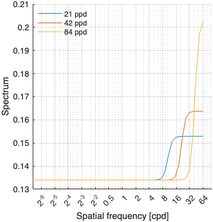
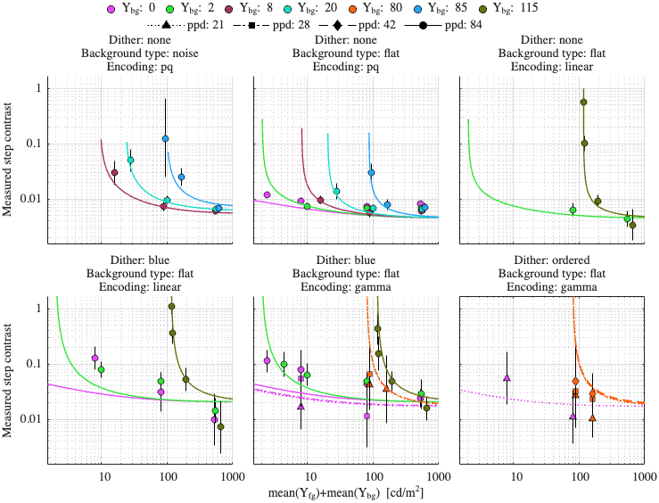
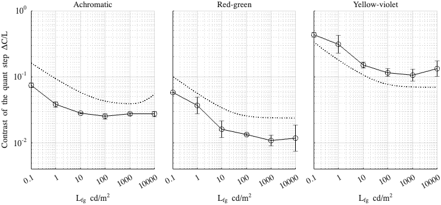

Fitting config: dither_spd, model: transducer_inv_f
Fitting error (RMSE): 0.843971
Model parameters
p.beta = 0.483058; p.gs_num = [ 0.0624031 0.0502542 0.999501 ]; p.noise_params = [ 0.577983 0.736608 0.283241 0.00273884 0.260343 ]; p.dither_amp_params = [ 0.025199 0.705624 ]; p.blue_dither_params = [ 0.497743 9.50619 0.133974 0.200861 ];
Model components
Blue noise dither spectrum

Dataset: [ar2025]
Scaling factor: 2.18706

Dataset: [kim2020]
Scaling factor: 9.56931
